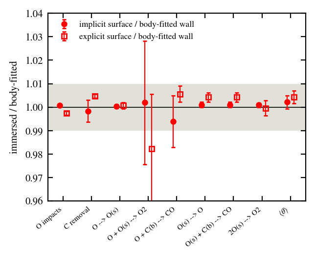
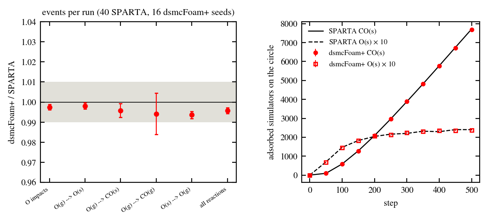
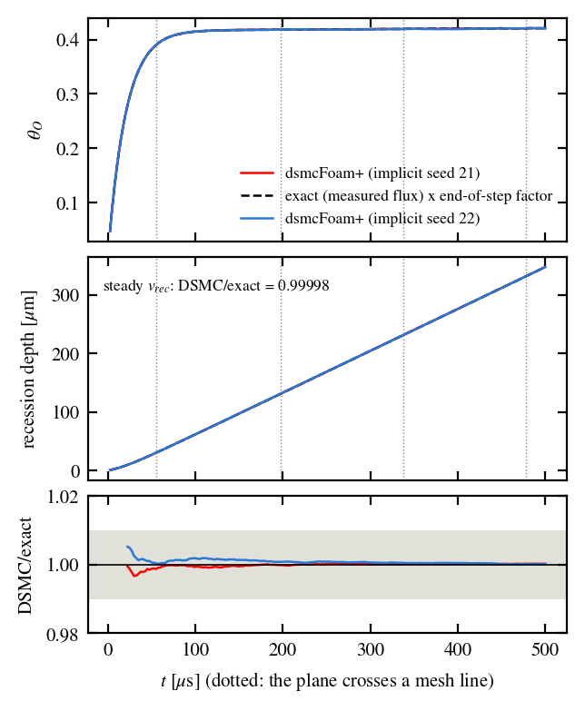
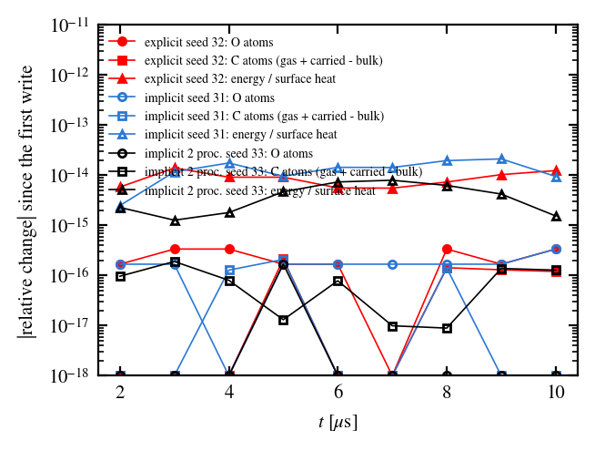
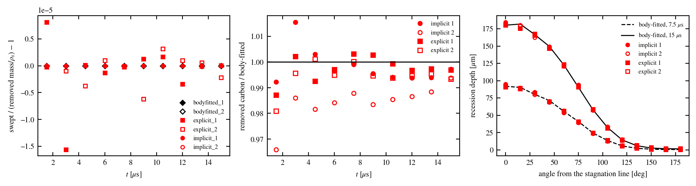

B5b: surface chemistry on the immersed surface
Verified: dsmcImmersedChemistry applies either a
probability-mode list of surface reactions (as on the catalytic
wall) or the finite-rate engine of B2-B5a on the cut cells of the
implicit or explicit immersed surface; the elements (cells) follow
the receding surface with their adsorbates, and the heat of
reaction and the bulk consumption feed the cell ledgers.
Against: the same mechanism on a body-fitted coverage wall,
SPARTA in.circle.gs_ps on an explicit circle, the 0-D exact
solution of the rate equations, and exact atom and energy ledgers.
Check |
Result |
|---|---|
Same mechanism on the fixed carbon cylinder: body-fitted vs implicit vs explicit |
every flux-carried rate and the mean coverage within 1 %; ER (3.4 % of the impacts) within its counting noise |
SPARTA |
GS channels within 2 standard errors; adsorbed counts NO(s) 0.990 \(\pm\) 0.017, NCO(s) 0.9958 \(\pm\) 0.0034 |
Recession of an immersed plane vs the 0-D exact solution |
steady recession velocity 0.99998 and 0.99927; removed mass 1.0002 and 1.0001; swept volume = removed mass/\(\rho_s\) to 1e-6 |
Atom and energy ledgers through 500 element updates and a restart (implicit, explicit, 2 processors) |
O atoms \(\le\) 3.4e-16, C atoms \(\le\) 2.1e-16, energy \(\le\) 2.1e-14 of the surface heat |
Per-cut-cell radiative equilibrium (plate, \(\varepsilon\) = 0.85) |
\(\langle T\rangle\) = 1189.36 \(\pm\) 0.05 K against \((q/\varepsilon\sigma)^{1/4}\) = 1189.34 K (ratio 1.00001) |
Regression of the single-\(\gamma\) input |
bitwise identical to the build before B5b |
Fixed shape: body-fitted, implicit and explicit surfaces
Carbon cylinder (R = 0.5 mm) in O (2e22 m-3, 4 km/s,
1000 K), surface at 2000 K, mechanism b5bcyl
(\(\Phi\) = 1019 m-2; GS: AA \(S_0\) 0.5,
ER 0.1, direct oxidation 0.05; PS: desorption 2e6 s-1,
oxidation of O(s) 1e6 s-1, second-order LH 1e6
s-1), on an O-grid body-fitted wall (80 faces), the implicit
surface on an 80 \(\times\) 80 grid, and SPARTA’s 180-gon as an
explicit STL; 2 seeds per surface.
Quantity |
body-fitted |
implicit/body-fitted |
explicit/body-fitted |
|---|---|---|---|
impacts |
6.726889e18 \(\pm\) 1.9e15 |
1.0007 \(\pm\) 0.0004 |
0.9974 \(\pm\) 0.0009 |
carbon removal |
8.873053e17 \(\pm\) 5.6e14 |
0.9984 \(\pm\) 0.0046 |
1.0047 \(\pm\) 0.0008 |
O(g) → O(s) |
2.233778e18 \(\pm\) 9.8e14 |
1.0004 \(\pm\) 0.0008 |
1.0007 \(\pm\) 0.0014 |
O(g) + O(s) → O2(g) |
2.278667e17 \(\pm\) 5.3e15 |
1.0020 \(\pm\) 0.0263 |
0.9823 \(\pm\) 0.0234 |
O(g) + C(b) → CO(g) |
3.361333e17 \(\pm\) 9.3e14 |
0.9939 \(\pm\) 0.0111 |
1.0056 \(\pm\) 0.0034 |
O(s) → O(g) |
1.102339e18 \(\pm\) 7.3e14 |
1.0011 \(\pm\) 0.0011 |
1.0042 \(\pm\) 0.0020 |
2O(s) → O2(g) |
1.757428e17 \(\pm\) 1.4e14 |
1.0009 \(\pm\) 0.0009 |
0.9995 \(\pm\) 0.0032 |
mean coverage O(s) |
1.738260e-1 \(\pm\) 8.5e-5 |
1.0021 \(\pm\) 0.0028 |
1.0043 \(\pm\) 0.0027 |
The second-order LH, whose rate depends on the coverage of each element, agrees to 0.1 %: the cut cells, elements of very different areas, integrate the same surface kinetics as the faces.


Immersed over body-fitted rates of the fixed carbon cylinder, implicit (filled) and explicit (open) surfaces; grey band \(\pm 1\) %.
SPARTA circle twin with GS and PS reactions
SPARTA examples/surf_react_adsorb/in.circle.gs_ps (sample-GS_2 +
sample-PS_1, \(n_{sites}\) = 6.022e9 m-2, twall 1000 K)
at the twin cadence; ours: the circle as an explicit immersed
surface on SPARTA’s 20 \(\times\) 20 grid, the same files through
spartaMechanism.
Quantity |
SPARTA |
ours |
ours/SPARTA |
\(z\) |
|---|---|---|---|---|
O impacts |
33539.2 \(\pm\) 19.1 |
33455.8 \(\pm\) 38.2 |
0.9975 \(\pm\) 0.0013 |
-1.95 |
O(g) → O(s) |
25041.8 \(\pm\) 18.4 |
24995.0 \(\pm\) 36.9 |
0.9981 \(\pm\) 0.0016 |
-1.13 |
O(g) → CO(s) |
7716.2 \(\pm\) 13.6 |
7683.5 \(\pm\) 22.4 |
0.9958 \(\pm\) 0.0034 |
-1.25 |
O(g) → CO(g) |
771.2 \(\pm\) 4.1 |
766.8 \(\pm\) 6.9 |
0.9942 \(\pm\) 0.0103 |
-0.56 |
O(s) → O(g) |
24906.8 \(\pm\) 17.7 |
24746.9 \(\pm\) 37.2 |
0.9936 \(\pm\) 0.0017 |
-3.88 |
NO(s) at step 500 |
240.1 \(\pm\) 2.1 |
237.6 \(\pm\) 3.6 |
0.9899 \(\pm\) 0.0174 |
-0.58 |
The desorption count differs by the draws SPARTA executes from its frozen counts and ours skips (76.8 per run; with them 0.9967). SPARTA’s own adsorbed count does not close with its event counts (AA - DS - LH1 - CI = 125 per run against NO(s) = 240), whereas ours closes exactly (237.7 = NO(s)); the conserved adsorbed counts agree.


Left: events per run, dsmcFoam+ over SPARTA (40 SPARTA and 16 dsmcFoam+ seeds); right: adsorbed simulators on the circle, SPARTA (lines) and dsmcFoam+ (markers).
Recession against the 0-D exact solution
2-D column with an implicit immersed plane under the O beam of B5a,
mechanism b5rec, \(\rho_s\) divided by 106 so that
the plane recedes 0.348 mm and crosses 4 mesh lines in 500 µs.
Quantity (DSMC/exact) |
seed 21 |
seed 22 |
|---|---|---|
Steady recession velocity |
0.99998 |
0.99927 |
Coverage (after the end-of-step factor) |
0.99983 |
0.99906 |
Removed mass at 500 µs, exact along the measured flux |
1.00021 |
1.00014 |
Solid volume lost / (removed mass/\(\rho_s\)) |
1.000000 |
1.000000 |
Max relative inventory change across an element update |
4.1e-16 |
4.3e-16 |
At the mesh-line crossings the coverage stays within 3-4e-4 of the exact history: the adsorbates move with the surface (1.65e13 molecules moved in 5000 updates).


Coverage, recession depth and DSMC/exact of the receding implicit plane (two seeds) against the exact solution along the measured flux; dotted lines: the plane crosses a mesh line.
Atom and energy ledgers across cut-cell changes
Closed 2 \(\times\) 2 mm box around the receding cylinder
(implicit, or the 180-gon as an explicit STL), O and O2 at
1500 K, the mixed mechanism of B5a, ledgerCheck true, the
cylinder losing 26 % of its volume; the implicit case restarts at
mid-time, once also on 2 processors.
Ledger |
implicit |
explicit |
implicit, 2 proc. |
|---|---|---|---|
O atoms |
3.36e-16 |
3.37e-16 |
1.69e-16 |
C atoms (gas + carried - bulk consumed) |
2.09e-16 |
2.12e-16 |
1.90e-16 |
Energy, relative to the surface heat |
2.12e-14 |
1.40e-14 |
7.95e-15 |
Removal ledger |
7.77e-16 |
2.22e-16 |
4.44e-16 |
Chemical-energy ledger |
2.22e-15 |
2.00e-15 |
1.78e-15 |
No parcel was found inside the solid, no cell lost gas, and no PS parcel failed to be placed.


Relative change of the O atoms, C atoms and energy since the first write, explicit, implicit and 2-processor implicit runs.
Finite-rate recession of a curved body
The fixed cylinder of the first section is given the solid density
\(1800/1.5\times10^5\) kg/m3. In 15 µs the stagnation
point recedes 0.18 mm, i.e. 3.6 cells or 36 % of the radius. The same
gas, mesh resolution and acceleration run on the body-fitted coverage
wall (moving O-grid, dsmcFoamAblation) and on the implicit and
explicit immersed surfaces, with 2 seeds each. The numbers are after
the body-fitted fix of B5a: reaction heats and chemistry-driven recession (section “Body-fitted
recession on curved walls”).
Immersed / body-fitted (mean of 2 seeds) |
implicit |
explicit |
|---|---|---|
Removed carbon at 15 µs |
0.9955 \(\pm\) 0.0054 |
0.9951 \(\pm\) 0.0054 |
Impacts |
0.9940 \(\pm\) 0.0039 |
0.9979 \(\pm\) 0.0026 |
Mean coverage O(s) |
0.9936 \(\pm\) 0.0034 |
0.9969 \(\pm\) 0.0051 |
Adsorption / desorption and oxidation of O(s) |
0.996 / 0.996 |
0.994 / 0.998 |
Direct oxidation / LH / ER |
0.995 / 0.986 / 1.009 |
0.990 / 0.992 / 0.964 |
Largest difference of the depth profile (15 µs) |
3.9 µm |
4.9 µm |
Swept volume / (removed carbon \(\times\,m_C/\rho_s\)) |
1 - 4e-10 |
1 - 2e-6 |
On the body-fitted wall the swept volume equals the removed volume to 3e-15. The single-run spread is about 0.5 % in removed carbon, 0.4 % in coverage and 1-2 µm in depth. The three surfaces agree within it, and the depth profiles agree within 0.1 cell at every angle. The ER channel (3.4 % of the impacts) has 1.7 % counting noise per run.


Receding cylinder. Left: swept/removed volume minus 1. Middle: removed carbon, immersed over body-fitted. Right: recession depth against the angle at 7.5 and 15 µs (black: body-fitted; red: implicit and explicit).
Reproduce
run/GSI/B5_recession/immersed/ (README.md): fixedShape/
(run_fixed.sh), spartaCircle/, recession/
(run_plate.sh), ledger/ (closure_immersed.py),
regression/; mechanisms in run/GSI/B5_recession/mechanisms/;
figures by plot_b5b.py. Note:
docs/Development/Verification/gsi/b5b_immersed_chemistry.md.
Run it yourself
Six tutorials in tutorials/verification/gsi/ reproduce the
decisive checks of this page on one core:
B5b_immersedRecession: the receding immersed plane against the 0-D exact solution (the set-up of section “Recession against the 0-D exact solution”, seed 21);B5b_immersedLedger: the atom and energy ledgers of the receding cylinder through 500 element updates and a restart (identities to 1e-12);B5b_secondaryProducts: review fix 1, one impact per reaction event and every secondary product queued on the level-set surface.B5b_curvedRecessionBodyFitted,B5b_curvedRecessionImplicitandB5b_curvedRecessionExplicit: the receding cylinder of section “Finite-rate recession of a curved body” on each surface (seed 11, 2-3 min). The swept-volume identity is checked, and the removed carbon, coverage, the six reaction totals and the depth profile at 7.5 and 15 µs are compared with the mean of the verified body-fitted runs, within the tolerances of their replica spread.
Copy a tutorial to a run directory and type ./Allrun; check.py
prints PASS or FAIL per metric, redraws the comparison in plots/
and ends with PASS: n/n metrics pass.